Property purchase - a process in 6 steps
Are you toying with the idea of buying a house or an apartment and want to know what you should expect?
Good news:
Hyppo.CH can assist you through the entire process.
We will walk you through the most important stages on the way to home ownership.
 

Check your affordability range
First and foremost, you have to understand what you can actually afford. In Switzerland, your affordability limit depends on two factors: the amount of savings that you have and your regular income. BTW... Did you know that you do not need to present 20% of the property price as a down payment? You can actually finance up to 10% of the property price with your pension savings. Unlike in other countries, using pension savings to increase the maximum purchase price is quite common in Switzerland and many people do it!
Beware of hidden costs like notary fees and issuance of mortgage certificates which are often overlooked by buyers. In some cantons, these fees may amount up to 5% of the property price and are not covered by a mortgage (meaning you have to pay it out of your own pocket at the time of purchase).
You can check your affordability range easily with Hyppo.CH to get a basic idea of the price range that you should be looking at. We also reveal hidden fees to give you a complete picture of the costs that you have to be ready for.
Get financing confirmation
Proof of funding (or “Finanzierungsbestätigung” in German) indicates your financial solvency. Imagine that you have invested hours in online research and suddenly you have found the right property! Excited about your progress you decide to call the agent for an appointment. And… bummer! You are not the only one that is interested and they inform you that there will be an "open house" date where you can compete with many other interested parties and place your offer. This is a common situation in Switzerland. To increase your chances of securing the property, you have to be prepared. The proof of funding provides you with an advantage and shows that you are capable of the financial commitment that is required by the asking price. This document is often required by real estate agencies before they can start evaluating your case.
More good news: you can get this document free of charge with Hyppo.CH!

Search for property
Now that you know what you can afford, it’s time to look for properties. Whether you’re looking for a house or an apartment, you should create a crystal clear image of what you want. Think about ideal size, location, surroundings and of course aesthetic and practical aspects. Deal with these questions honestly and as uninfluenced as possible by friends or trends. This compass will make it easier for you to search and decide for or against a property. Here are the links to the most popular real estate portals in Switzerland. We suggest checking multiple portals since some of the listings have exclusive publishing agreements with a particular site: https://homegate.ch https://immoscout24.ch https://immowelt.ch You can also hire a real estate agent. Once you have found a suitable property, you go to an inspection and/or request documentation from the seller.
https://homegate.ch
https://immoscout24.ch
https://immowelt.ch
You can also hire a real estate agent. Once you have found a suitable property, you go to an inspection and/or request documentation from the seller.
Evaluate the property
A property evaluation (or “Liegenschaftsbewertung” in German) can be requested from a bank in order to evaluate whether the property you are considering is worth its selling price. Each bank wants to understand the value of a property before granting a mortgage and this should be your ambition too! Why?
Let's say the home of your dreams is available and you are ready for the next step – the price negotiation (yes, there is always room for that and it’s a normal part of the purchase process!). Now you need valid arguments. Market value is going to provide you with exactly that. It will also take future renovations into consideration and give you a great idea of what you will have to invest down the road. Listing those costs and confronting the seller with those details leverages your position massively. Be prepared!
Even more good news: you can get this document free of charge from Hyppo.CH! All you need to do is share your contact information with us and a qualified advisor will get in touch with you within one business day.
Reserve the property
Once you have found a property that you like and really want to buy, you can reserve the property. It is not uncommon in Switzerland for a seller to ask for a small amount to be paid upfront (usually around 5% of the property price). This amount will later be counted toward the down payment and will guarantee that no one else can buy your dream home.
Finalise mortgage contract and purchase agreement
Once you have been awarded the contract by the seller, both of you will go to the notary to prepare the necessary contractual documents. At the same time, you conclude the mortgage contract with the financing bank and receive an irrevocable financing confirmation. After this, you and the seller go to the notary again and both parties sign the purchase contract so you become the official owner. You then send a copy of the signed purchase contract to your lender. Since the mortgage and purchase contracts are interdependent, you may have to conclude the mortgage contract before the purchase contract.